２０２２年もグラフアートさんよりミルモグッズが発売されました！
今回はお正月＆寅年をテーマにしたミルモグッズ。
１月２２日の発売日にゲットしましたので、早速レポートしたいと思います〜。
販売店は前回と同じく、グラフアートショップ池袋本店になります（P'PARCOの方ではないので注意）。
開店時間の数分前にお店に到着したら、いつも開店時間に突撃する夏田みかんさんと遭遇！
私は２番手で発売日のお店にいざ入店しました。
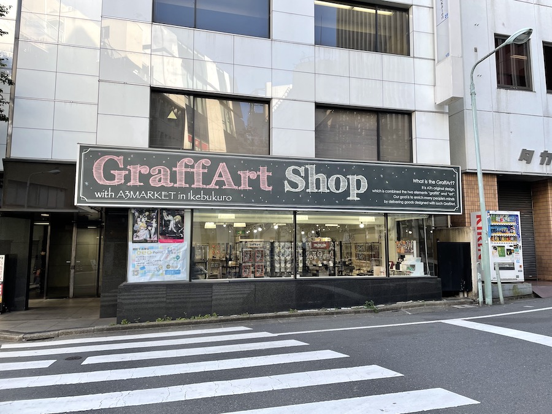
今回の売り場もグラフアートショップ池袋本店の方です。
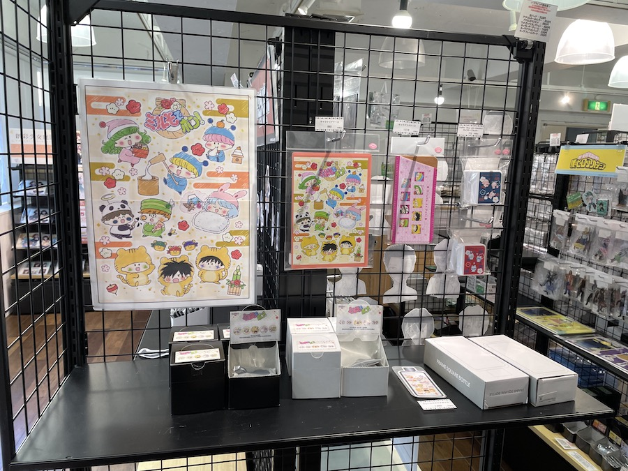
前回とは異なる場所に、ミルモ特設コーナーが設けられていました。
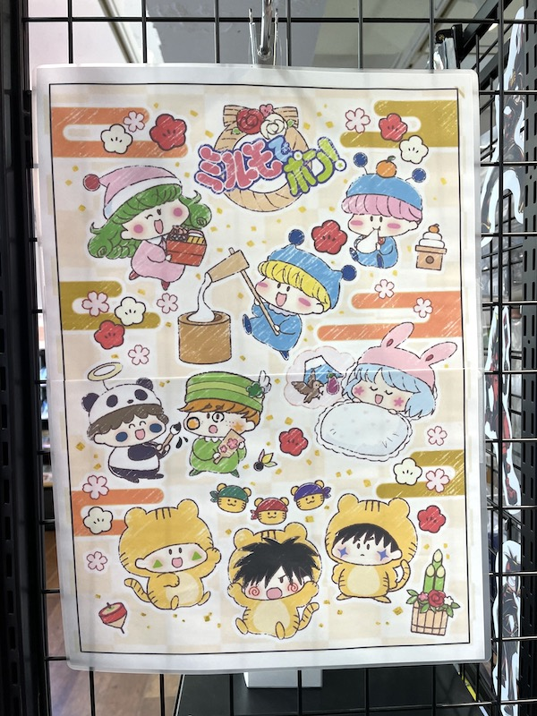
コーナーの左側には、今回のイラストが大きく飾られていました。
寅年にちなんでトラの着ぐるみをかぶった妖精忍者３人がかわいすぎです！
・・・ん？
缶バッジとアクリルキーホルダー以外のグッズは２個ずつしか並べられていない・・！？
夏田みかんさんと私が商品を買い物かごに入れると、いくつかのグッズは売り切れになってしまいました(^◇^;)
もともと「絶対手に入れたい方は、ぜひ店頭受取予約をご利用ください」とあり、店頭販売の数は少ないと予想していましたが、まさかこれほどまでに少ないとは・・。
夏田みかんさんが店員さんに聞いた話では、商品は店頭に出ているのみとのこと。。
ごめんなさい、開店から１分後に売り切れ状態にさせてしまいましたm( _)m。
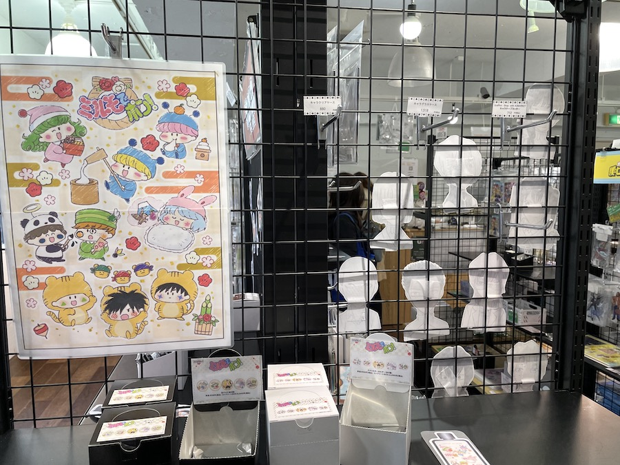
開店から１分後にはこのような状態に・・・。
ここからは、恒例のグッズ紹介となります！
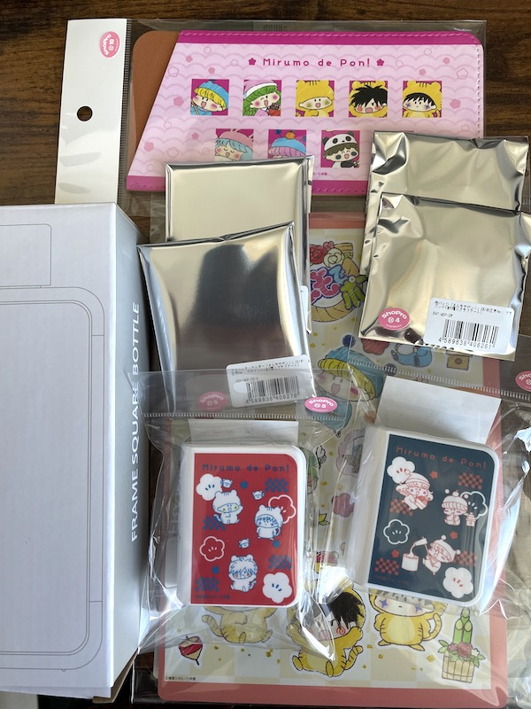
今回購入したグッズたちの全景です。
缶バッジとアクリルキーホルダーはそれぞれ２個ずつのお買い上げです。
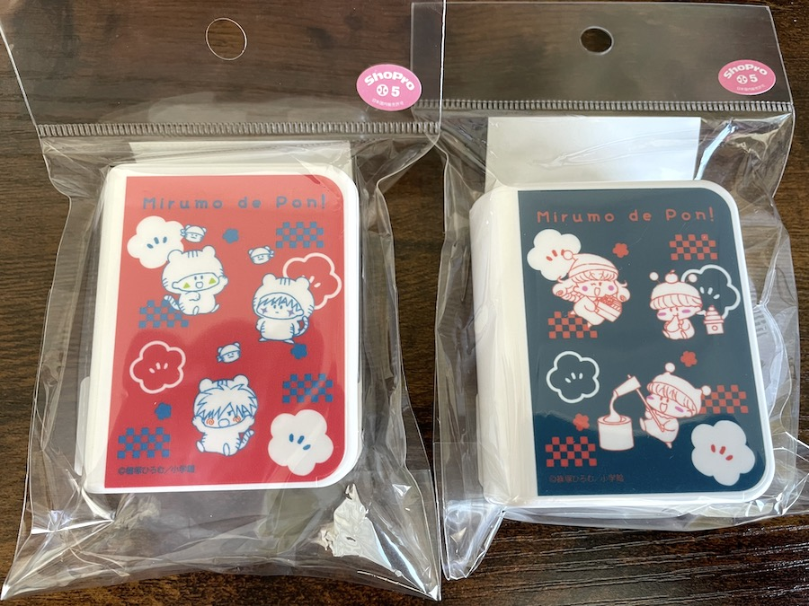
まずは「キャラテープカッター」（全２種）です。
いわゆる小型のセロハンテープ。
２色刷りかと思いきや、妖精たちのほっぺはちゃんと色がついているのですね。
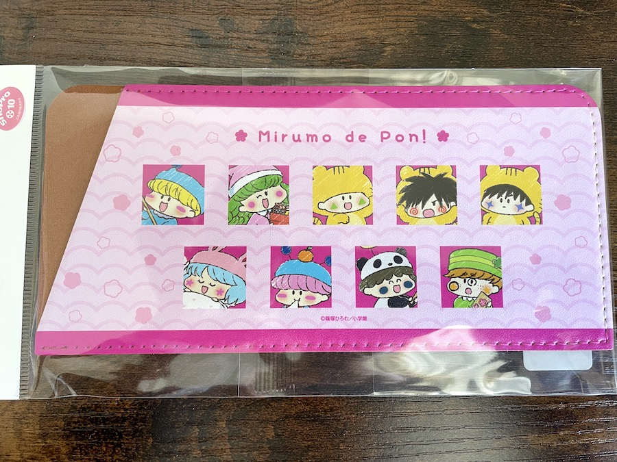
続いて「キャラグラスケース」です。
眼鏡ケースやペンケースとして使えるようです。
妖精の顔がタイル状に並べられていて、ストリートファイターⅡのキャラ選択画面のようにも見えたり(^^;
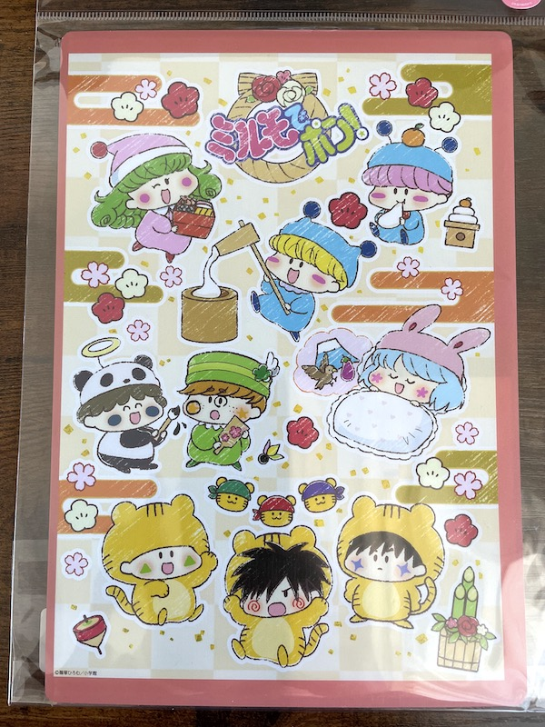
「キャラクリアケース」です。
A5サイズで、チケットやポストカードを収納するのに重宝しそう。
厚みがあるので、実用性があるような気がします。
うーん、もう１個普段用に欲しかった・・。
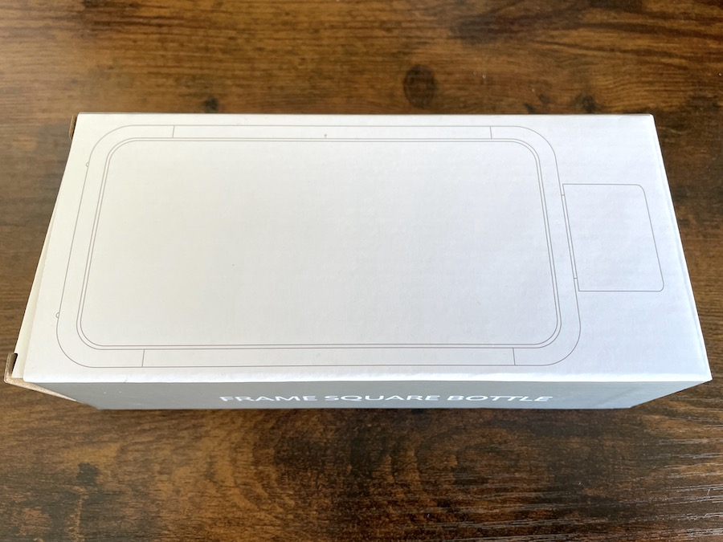
さてさて、今回の目玉とも言える、「フレームスクエアボトル」の紹介へ。
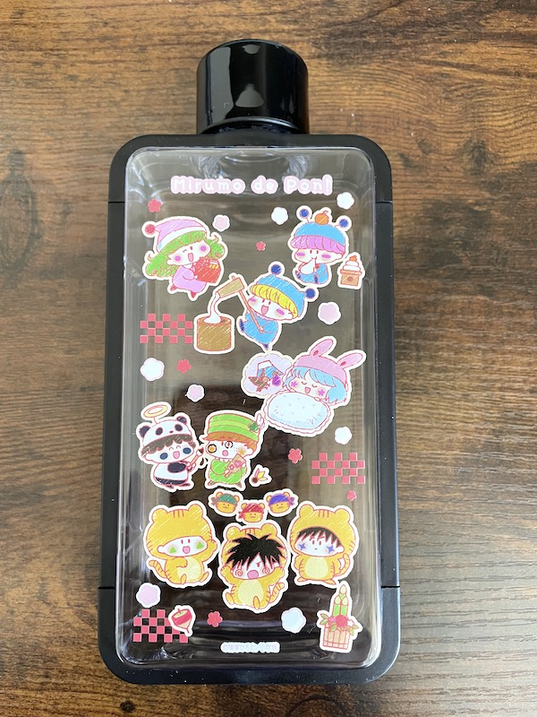
透明デザインに今回の妖精たちが全員描かれています〜。
学校や職場で使ったら注目されること間違いなしです！
ちなみにボトルの外枠のフレームは取り外して洗えるようになっています。
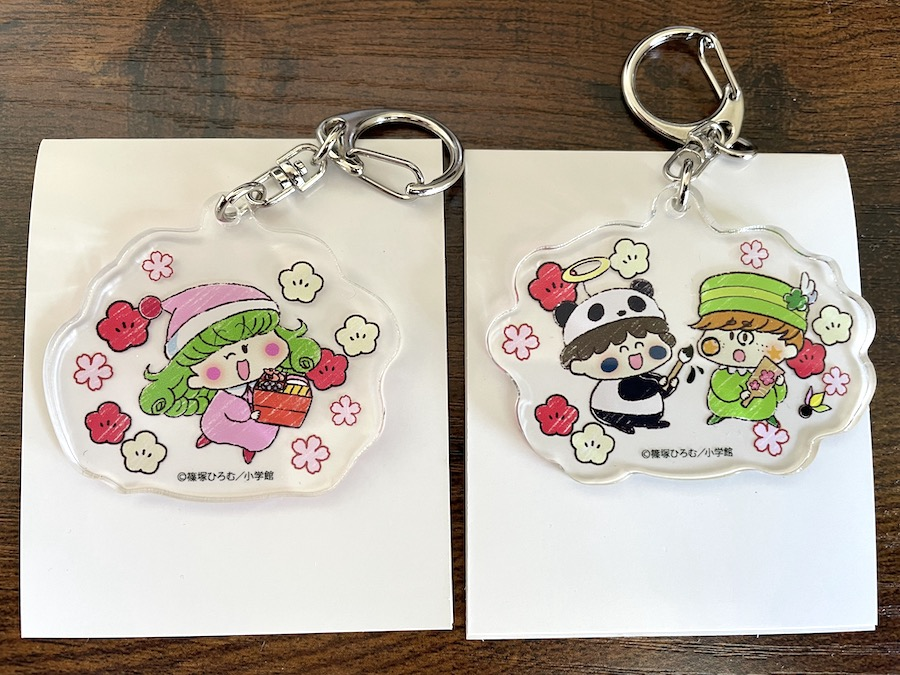
「アクリルキーホルダー」（全５種）です。
今回はリルムとパンタ＆ペータをゲット。
リルムが抱えているお節料理は他の誰かが作ったものかな・・？
もしかして手作り！？ お正月からミルモも大変だ(笑)
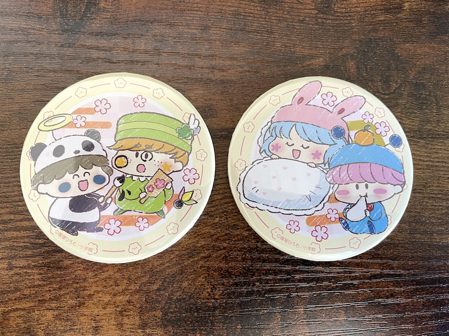
最後に「缶バッジ」（全５種）です。
全体イラストではムルモとパピィは距離がありましたが、缶バッジだと２人一緒なのがかわいいですね。
そしてパンタとペータの謎コンビも再び。
原作・アニメでは接点なかった２人ですが、パンタのお相手がいないからペータが選ばれたのでしょーか！？
以下は、記録として通販サイトからの引用となります。
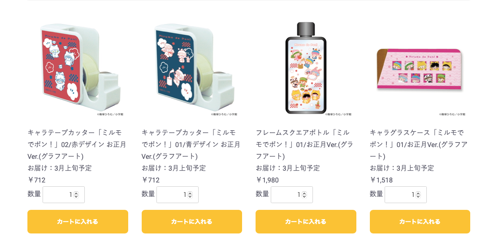
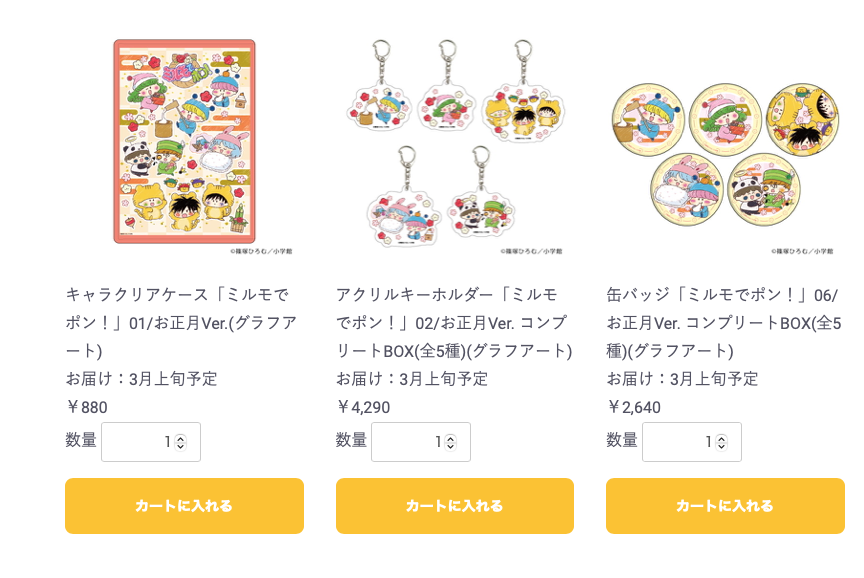
グラフアートのグッズも、２０２０年１月から始まり、今回で６回目。
いつも素敵なグッズを販売いただいているので、これからも季節に合わせたミルモグッズの販売に期待したいですね。
そして店頭での販売数はとても少ないので、次回からは店頭受取予約を利用するようにします。
そのためにも、グラフアートグッズの情報チェックはこまめに行わなくては！
もしも新作情報が掲示されていたら、情報提供いただけると助かりますm(_ _)m
(2022/1/22)